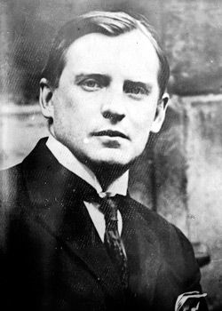
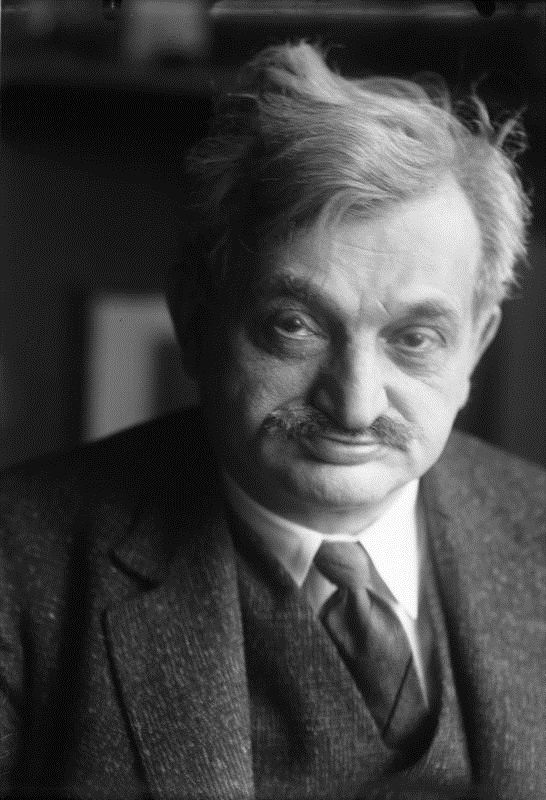
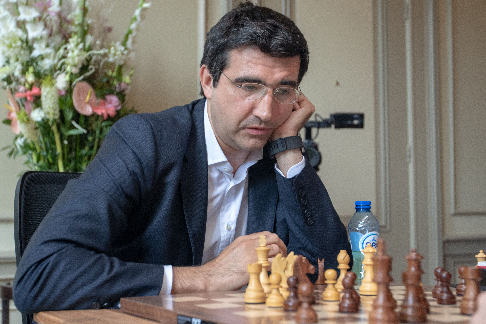
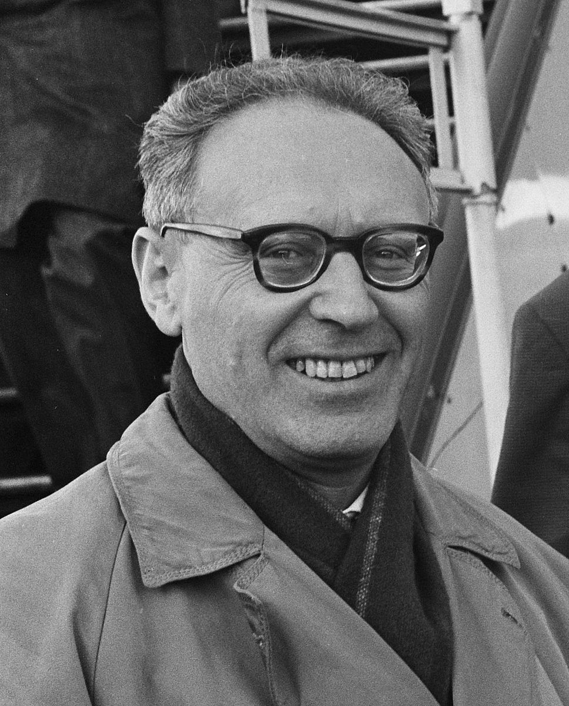
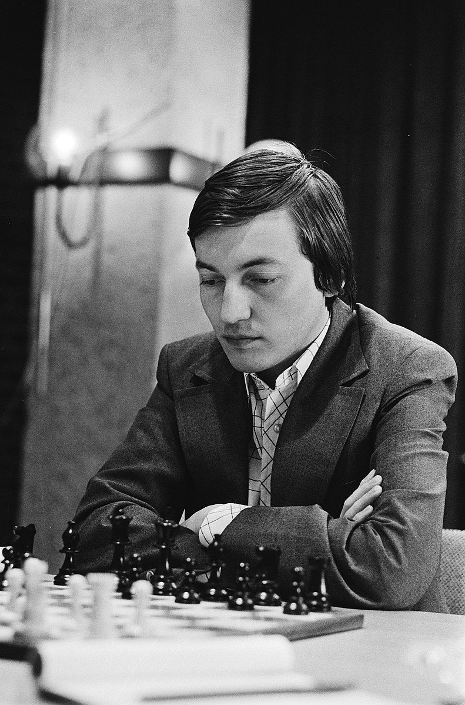
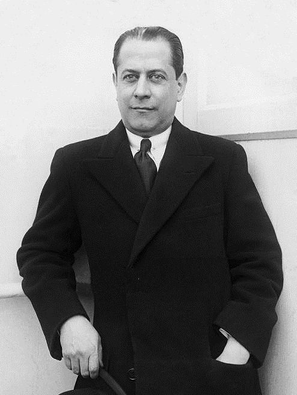
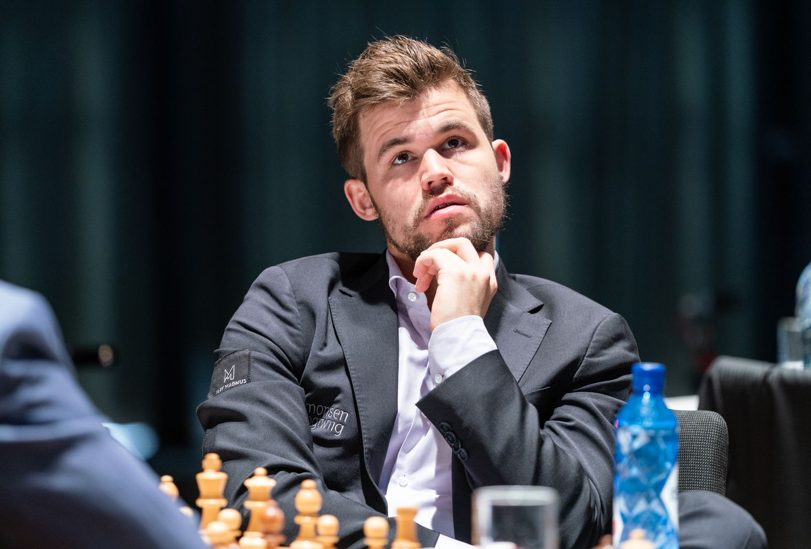
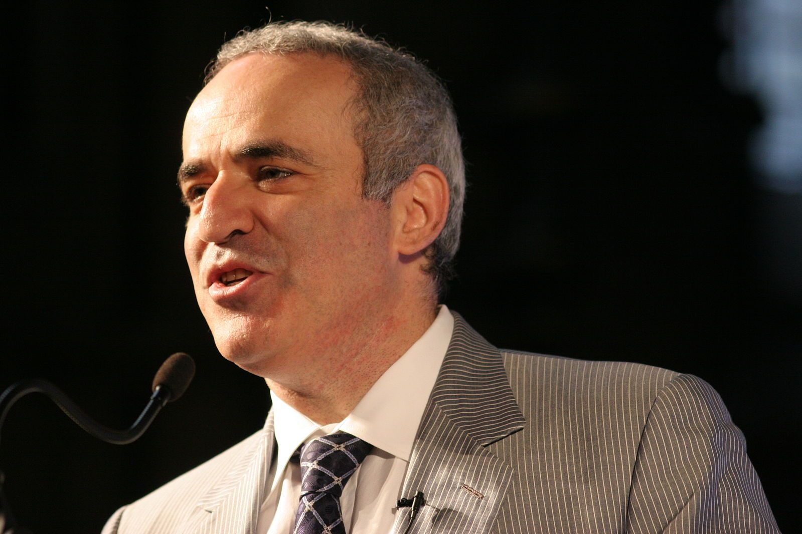

Величайшие шахматисты
#10 Александр Алехин
Александр Алехин был четвертым официальным чемпионом мира по шахматам с 1927 по 1946 годы (кроме периода 1935-1937 годов). Он был блестящим, разносторонним шахматистом с особым умением вести комбинационную игру в сложных позициях. От него мир шахмат узнал, что правила и принципы можно нарушать, если этого требуют особенности конкретной позиции.
Алехин победил в матче на первенство мира Хосе Рауля Капаблнку в 1927 году, хотя до того не выиграл у него ни одной партии.
Век Алехина на троне чемпиона мира был долгим, но он успешно защищал титул лишь дважды, в матчах против Ефима Боголюбова в 1929 и 1934 годах. По многим причинам Капабланка и Алехин никогда не сыграли матч-реванш.
В 1935 году Алехин неожиданно уступил в матче на первенство мира Максу Эйве, но через два года победил в матч-реванше и вернул себе корону, сохраненную до смерти. В 1946 году он умер в ранге чемпиона мира, уже договорившись о чемпионском матче с Михаилом Ботвинником.
#9 Михаил Таль

Михаил Таль, "Волшебник из Риги", был восьмым официальным чемпионом мира. В 1960 году он победил Ботвинника, завоевав титул в 23 года и став самым юным чемпионом мира, хотя впоследствии Каспаров и Карлсен превзойдут это достижение.
Уникальный атакующий стиль Таля уже много десятков лет вдохновляет шахматистов. Известно его высказывание: "Нужно затащить противника в темный, дремучий лес, где 2+2=5, и спасительная тропка достаточно узка, чтобы по ней мог пройти только ты сам".
Сборник партий Таля "В огонь атаки" считается одной их величайших книг о шахматах всех времен.
#8 Эмануил Ласкер
Эмануил Ласкер был вторым чемпионом мира по шахматам. Он владел титулом 27 лет, с 1894 по 1921 годы, дольше, чем кто-либо еще. Его игровая карьера продолжалась пятьдесят лет. Ласкер завоевал титул в матче с первым чемпионом мира Вильгельмом Стейницем в 1894 году и защитил его пять раз в матчах с претендентами мирового класса: Фрэнком Маршаллом, Зигбертом Таррашем, Давидом Яновским и Карлом Шлехтером.
В 1921 году Ласкер уступил в матче на звание чемпиона мира Капабланке, но продолжил добиваться успехов высочайшего уровня. В 1935 году в возрасте 66 лет он занял третье место на турнире в Москве, на пол-очка отстав от Ботвинника и Сало Флора, но опередив Капабланку и 16 других участников.
#7 Владимир Крамник
Владимир Крамник был чемпионом мира с 2000 по 2007 годы. Он победил легендарного Каспарова в 2000 году и защитил свой титул в матчах против Петера Леко в 2004 году и Веселина Топалова в 2006 году. Победив чемпиона мира ФИДЕ Топалова в объединительном матче, Крамник стал первым бесспорным чемпионом мира со времени разрыва Каспарова с ФИДЕ в 1993 году.
В лучшие годы Крамник мог в шахматах все. Он особо известен фантастическим мастерством игры в окончаниях и чистым позиционным стилем. Крамник - один из самых неприступных защитников в истории шахмат.
25 лет подряд Крамник входил в десятку сильнейших гроссмейстеров мира, пока в январе 2019 года не заявил о своем уходе из профессиональных шахмат.
#6 Михаил Ботвинник
Михаил Ботвинник известен как "патриарх Советской шахматной школы". Шестой чемпион мира владел титулом с 1948 по 1963 годы (с двумя краткими перерывами), оставаясь одним из сильнейших гроссмейстеров мира более 30 лет. Стиль Ботвинника характеризовался сочетанием железной логики и гибкости, он также обладал особым даром к методичной подготовке и стратегическому планированию. Он мог приспособиться к любому стилю игры противника.
Ботвинник стал чемпионом мира в 1948 году и защитил титул в матчах с Давидом Бронштейном (1951) и Василием Смысловым (1954). В 1957 году Смыслов победил Ботвинника, но тот вернул себе титул в матч-реванше на следующий год. В 1960 Ботвинник уступил Талю, но вновь извлек уроки из поражения и победил в матч-реванше в 1961 году.
Его эра на шахматном троне завершилась матчем против Петросяна в 1963 году, но Ботвинник продолжал играть на высочайшем уровне до окончания турнирной карьеры в 1970 году. Еще в 1963 году прошла первая сессия Всесоюзной школы шахмат Ботвинника, участвовавшего в становлении трех чемпионов мира: Карпова, Каспарова и Крамника.
#5 Анатолий Карпов
Анатолий Карпов, 12-й чемпион мира, владел шахматной короной с 1975 по 1985 годы, а с 1993 по 1999 являлся чемпионом мира по версии ФИДЕ. Карпов был исключительно многогранным шахматистом, но главными чертами его стиля называют позиционный зажим, профилактическую игру и прекрасную технику эндшипиля.
Звание чемпиона мира досталось Карпову, когда Фишер отказался защищать свой титул в 1975 году, поскольку ФИДЕ не согласилась на его условия. Он дважды отстоял корону в матчах с Виктором Корчным в 1978 и 1981 годах. В 1984 Карпов столкнулся в матче на первенство мира с Каспаровым, и мир шахмат изменился навсегда.
Всего с 1984 по 1990 год они сыграли пять матчей: 19 партий выиграл Карпов, 21 - Каспаров, и 104 завершились вничью!
Когда в 1993 году Каспаров порвал с ФИДЕ, Карпов победил в матче под эгидой этой организации Яна Тиммана, в 1996 году защитил титул в матче с Гатой Камским а в 1998 - с Анандом. В 1999 году ФИДЕ решила разыграть титул чемпиона в нокаут-турнире, но Карпов отказался играть на таких условиях.
Творчество Карпова и сегодня остается источником вдохновения для всех позиционных шахматистов. Сборник его лучших партий - одна из величайших книг в истории шахмат.
#4 Хосе-Рауль Капабланка
Хосе-Рауль Капабланка - третий чемпион мира по шахматам и один из самых одаренных шахматистов в истории. С 1916 по 1924 годы продолжалась его серия партий из 40 побед и 23 ничьих без поражений - беспрецедентное историческое достижение. В эти годы талант и мастерство Капабланки не знали себе равных.
Капабланка стал чемпионом мира после победы над легендарным Ласкером в 1921 году. Многие полагают, что он намного раньше стал сильнее Ласкера и мог бы победить в матч-реванше Алехина, но чемпионский срок Капабланки сократили Первая мировая война и споры о проведении матчей на первенство мира.
Каждый чемпион мира в совершенстве владел всеми стадиями шахматной партии, но Капабланка был особенно хорош в окончаниях. Даже сейчас с движками трудно найти ошибки в его классических партиях.
#3 Роберт Фишер

Роберт Фишер - 11-й чемпион мира по шахматам и единственный американец, завоевывавший этот титул. Для многих он - самый известный шахматист в истории. В 1970-1971 Фишер выиграл подряд 20 партий у противников мирового уровня, чего не добивался никто ни до, ни после него. Это достижение считается одним из семи самых удивительных шахматных рекордов.
В 1972 году Фишер победил Спасского в "Матче века". Его успех в противостоянии с Советской шахматной школой стал одним из знаковых событий Холодной войны.
Его стиль был оригинальным и творческим. Он одинаково хорошо атаковал и защищался, демонстрируя пугающее позиционное понимание. Фишер вдохновил мноого поколений шахматистов в США и во всем мире.
Выигранная им "Партия века" - одна из самых известных партий всех времен, а книга "Мои 60 памятных партий" - одна из лучших в истории шахмат.
#2 Магнус Карлсен
Магнус Карлсен - действующий чемпион мира во всех трех стандартных контролях (классике, рапиде и блице). В 2009 году от стал самым юным восьмисотником в истории шахмат, а 21 апреля 2014 года достиг исторически высочайшего рейтинга 2889 баллов Эло.
Карлсен с 2011 года занимает первую строчку в рейтинг-листе классических шахмат, доминируя над другими шахматистами современности. В 2020 году еще продолжается его уникальная серия из 120 классических партий без поражений.
Он сделал достаточно, чтобы занять второе место в списке величайших шахматистов всех времен, но ему всего 29 лет, и он еще не достиг максимума своей силы!
Карлсен стал чемпионом мира в 2013 году накануне своего 23-летия (только Каспаров стал чемпионом в более молодом возрасте). Он трижды успешно защитил свой титул: в новом матче против Ананда в 2014 году, в матче с Сергеем Карякиным в 2016 и с Фабиано Каруаной в 2018 году.
Сам Карлсен пока не считает, что он достоин места №1 в списке величайших шахматистов в истории. В январе 2020 года он сказал в интервью: "Каспаров был сильнейшим в мире 20 лет без перерыва... Его нужно считать шахматистом №1 в истории. Но я чувствую, что время играет в мою пользу... Мне еще нет 30 лет. Если считать, кто чего добился к 30 годам, то тут я впереди".
#1 Гарри Каспаров
Гарри Каспаров, 13-й чемпион мира по шахматам, владел титулом с 1985 по 2000 годы. Он впервые поднялся на первую строчку в мировом рейтинге в 1984 году и оставался сильнейшим в мире шахматистом до 2006 года. Он доминировал в шахматах более 20 лет.
3 марта 2000 года Каспаров достиг своего рекордного рейтинга 2856 баллов — этот рекорд был превзойден только Карлсеном.
В 1985 году Каспаров победил Карпова в матче на первенство мира, став самым юным чемпионом в истории шахмат в возрасте 22 с половиной лет. Он трижды защищал титул в матчах с Карповым в 1986, 1987 и 1990 годах. В 1993 году он порвал отношения с ФИДЕ и основал ПША. С того момента и до объединительного матча Крамника и Топалова в 2006 году в мире было два чемпиона мира по шахматам.
Каспаров защитил свой титул в матчах с Шортом в 1993 и Анандом в 1995 году. Каспаров и Ласкер - единственные чемпионы в истории шахмат пять раз побеждавшие претендентов на свой титул.
В 2000 году Крамник победил Каспарова, отняв титул чемпиона у величайшего шахматиста всех времен. Каспаров продолжил выступать в турнирах до самого окончания карьеры в 2005 году, когда он все еще занимал первую строчку мирового рейтинга.
И после этого Каспаров не покидал мир шахмат окончательно. он участвовал в выставочных матчах и тренировал Карлсена и Хикару Накамуру. Его пятитомник "Мои великие предшественники" - одна из величайших книг в истории шахмат.